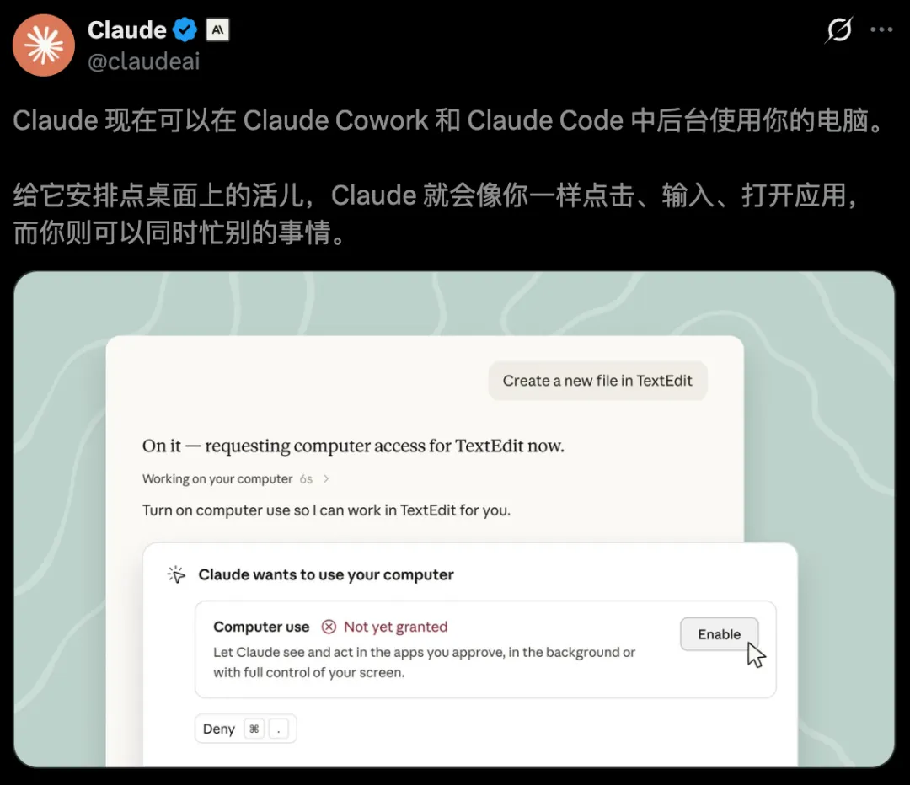
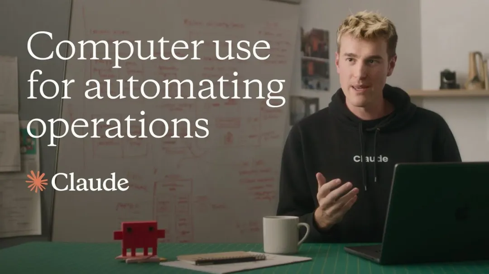
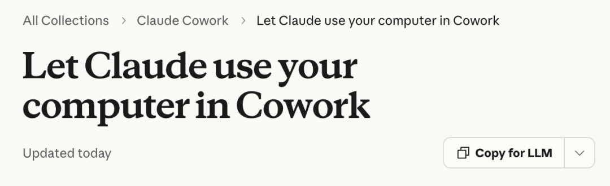
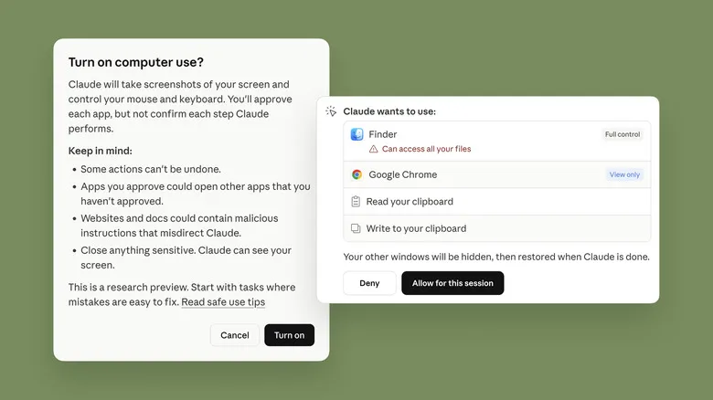

新智元报道
新智元报道

Fable 5.1发布仅24小时，A社又放大招了！
今天，Anthropic宣布全面升级Claude「计算机使用」能力。
现在扔给它一个任务，Claude就能自己打开软件、点击按钮、输入内容，在多个应用之间来回操作。

最大的变化是，这些操作直接在后台完成。
一个人，一台电脑，两条工作流，终于可以同时跑了。
目前，Computer Use处于Beta测试阶段，已面向Claude Pro和Max订阅用户开放，macOS版首先体验。

Claude「计算机使用」功能，对于每个人来说并不陌生。
早在今年3月，它就随Dispatch一起上线了。
它的工作原理本质上是一个Loop：截图→模型看图→输出坐标→系统去点。

这种让AI接管电脑的方式，体验多少有些尴尬——
任务是交出去了，鼠标和键盘也跟着一起「上交」。AI每点一次，你的光标就被拽走一次。它干活的几分钟里，人只能在旁边看着。
这一次，在macOS 15及以上系统中，Claude默认通过后台窗口工作，不占用用户正在使用的鼠标和键盘。
你可以继续写文档、回消息，Claude则在另一边打开App、整理文件、测试程序。
如果检测到用户正在输入，Claude还会主动等待。
只有任务必须接管整个屏幕时，它才会在每次会话中首次发起前台操作前征求许可。

从Anthropic公开的文档看，Claude的桌面操作，仍然建立在经典的「感知—决策—执行—反馈」循环上。
每执行一步，系统会截取当前窗口画面，将截图交给视觉模型理解。
Claude识别按钮、输入框、菜单和页面状态，随后生成点击坐标、键盘输入或滚动等动作。
桌面端执行动作后，再返回一张新截图。

Claude判断操作是否成功，接着规划下一步。如此循环，直到任务完成，或者遇到需要用户确认的问题。
整个过程可以简化为：
截取屏幕 → 理解界面 → 选择动作 → 执行操作 → 检查结果
这也是GUI智能体，比普通工具调用更难的原因。
API返回的是结构化数据，字段含义固定，屏幕只提供像素。同一个「提交」按钮，可能出现在不同位置、不同尺寸和不同主题中，还可能被弹窗遮住。
只要窗口移动、页面加载变慢，或者某次点击没有生效，后续步骤就可能全部偏离。
这一次的更新，全部覆盖了Cowork和Claude Code场景。
当一个人下达任务后，Claude会采用一套高度优化的三级降级执行架构——
API连接器（Connectors）：任务涉及Gmail、谷歌和微软办公全家桶，Claude优先通过底层API交互，数秒完成；
内置浏览器（Browser）：没有直连API时，Claude接管内置浏览器，在网页端自动化操作；
屏幕交互（Screen Interaction）：以上两个都不满足时，Claude便会触发终极「计算机使用」能力。
不得不说，在macOS 15环境下，屏幕交互迎来了体验上的质变。
过去两年，AI智能体一直在学习使用工具。
先是调用搜索和代码解释器，后来接入浏览器、邮箱与办公软件，现在终于开始直接进入操作系统。
Claude这次升级，表面上解决的是「不抢鼠标」，背后争夺的却是桌面操作系统里的第二个工作席位。
当AI能够在后台看屏幕、开软件、跑流程，人类与电脑的关系也在悄悄改变。
以前，一台电脑同一时间基本只服务一个操作者。以后，前台是人，后台是智能体；
用户负责判断、沟通和决策，AI持续处理那些漫长、重复、必须跨应用完成的工作。
从聊天框走向浏览器，再从浏览器进入整台电脑，Claude离真正的「赛博替身」，又近了一步。
参考资料：
https://x.com/claudeai/status/2095226833293685100
https://support.claude.com/en/articles/14128542-let-claude-use-your-computer-in-cowork
编辑：桃子